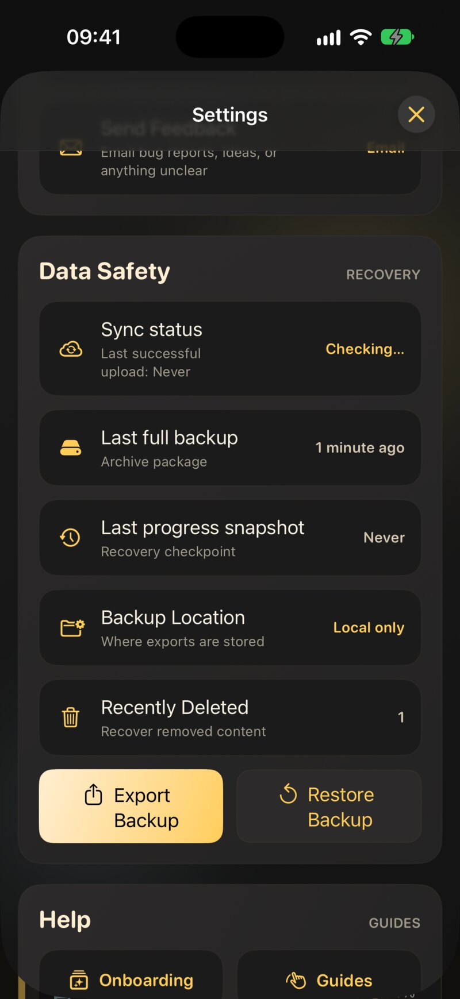
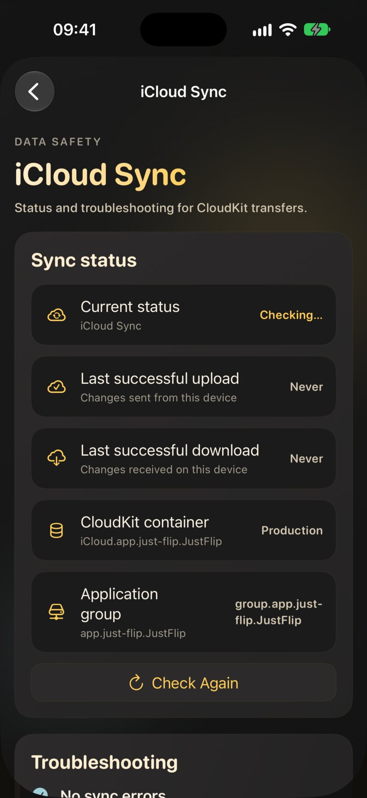
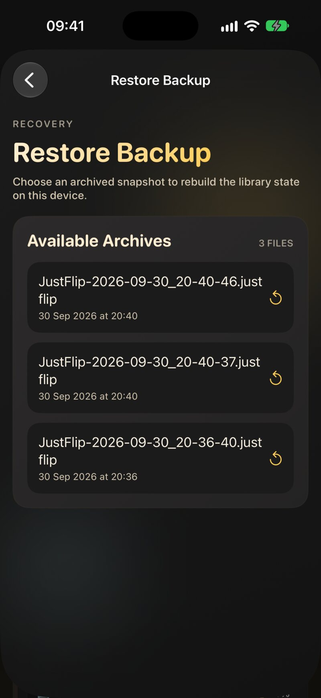
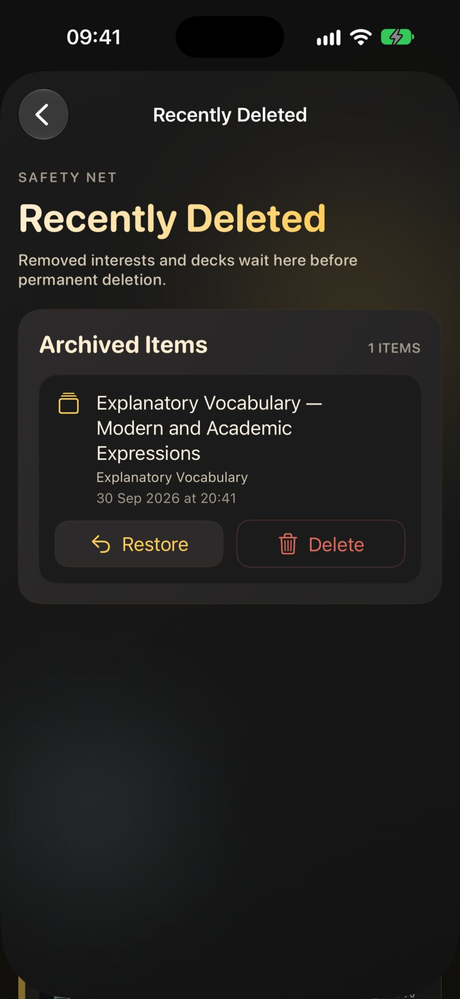

10.1 Tres capas de seguridad
| Capa | Qué es | De qué te protege |
|---|---|---|
| 1. Sincronización con iCloud | Tu biblioteca, idéntica en todos tus dispositivos | Un dispositivo perdido, roto o sustituido |
| 2. Copias de seguridad automáticas | Instantáneas periódicas que JustFlip! hace por su cuenta | Errores que la sincronización copiaría en todas partes |
| 3. Exportación manual | Archivos que guardas donde quieras | Todo lo demás, incluido dejar iCloud |
Las tres están en Ajustes › Seguridad de datos. Abre Ajustes desde el icono del engranaje de arriba de la lista de intereses y desplázate hasta la sección Seguridad de datos.

La sincronización hace que todos los dispositivos coincidan. Eso incluye tus errores: elimina un interés en el iPad y desaparecerá del iPhone y del Mac en cuestión de minutos. La sincronización no tiene deshacer propio. Justo por eso existen las capas 2 y 3.
10.2 Sincronización con iCloud
La sincronización está incluida para todo el mundo, con o sin Pro. No hay nada que activar dentro de JustFlip!: si tu dispositivo tiene iniciada la sesión en iCloud, tu biblioteca se sincroniza a través de tu propia cuenta de iCloud.
10.2.1 Qué se sincroniza
- Los intereses, mazos y tarjetas, con sus imágenes y sonidos
- Tu progreso de aprendizaje: cada evaluación, intervalo, fecha de repaso y olvido
- Las tarjetas retiradas y pospuestas, las marcas de las tarjetas, las prioridades y los seguimientos de progreso
- Las eliminaciones, incluido lo que espera en Eliminados recientemente
Tus ajustes se quedan en cada dispositivo: el tema, el tamaño del texto, las voces, los recordatorios y los límites diarios como Tarjetas nuevas al día. Así puedes tener un teléfono tranquilo y un iPad con mucho trabajo. El Apple Watch recibe sus tarjetas de tu iPhone, no de iCloud (consulta el capítulo 8).
10.2.2 Cómo se comporta
- Primero sin conexión. Todo funciona sin conexión. Tus cambios se guardan en el dispositivo al momento y se envían cuando vuelves a estar en línea.
- En segundo plano. No hay botón de sincronizar. Los cambios viajan solos, normalmente en cuestión de segundos o de pocos minutos.
- Gana el último cambio. Si editas la misma tarjeta en dos dispositivos antes de que se sincronicen, se queda la edición más reciente.
Instala JustFlip! en el dispositivo nuevo, inicia sesión con la misma cuenta de Apple y abre la app. Tus intereses van apareciendo a medida que llegan; mientras espera, la lista vacía te lo indica. Una biblioteca grande con muchas imágenes puede tardar un rato en la primera sincronización, así que deja la app abierta y conectada a una red wifi.
10.3 El estado de sincronización
La primera fila de Seguridad de datos, Estado de sincronización, muestra el estado de iCloud en este dispositivo, con la hora de la última subida correcta debajo.
| Estado | Qué significa |
|---|---|
| Comprobando… | JustFlip! le está preguntando a iCloud si tu cuenta está disponible |
| Disponible | Tu cuenta de iCloud está lista y la sincronización puede funcionar |
| Sincronizando… | Se están enviando o recibiendo cambios en este momento |
| No disponible | No hay ninguna cuenta de iCloud disponible en este dispositivo, así que no se sincroniza nada |
| Error de sincronización | iCloud informó de un error la última vez que lo intentó |
No disponible y Error de sincronización se muestran en rojo.
Disponible solo dice que tu cuenta está lista. No garantiza que todos los cambios hayan llegado ya a iCloud. Para eso, mira las horas de subida y de descarga en la pantalla Sincronización con iCloud.
10.3.1 La pantalla Sincronización con iCloud
Toca Estado de sincronización para ver los detalles:
- Estado actual: el estado de la tabla anterior.
- Última subida correcta y Última descarga correcta: cuándo confirmó iCloud por última vez que se enviaron cambios desde este dispositivo o se recibieron en él. Guardar en local no cuenta; solo cuenta una transferencia confirmada.
- Subida en curso, mientras se está realizando una.
- Comprobar de nuevo: vuelve a preguntarle a iCloud si tu cuenta está disponible.
- Solución de problemas: el último error del que informó iCloud, o Sin errores de sincronización.
- Actividad de sincronización reciente: un registro de los eventos de sincronización recientes de este dispositivo, útil cuando contactas con soporte.

Cuando un cambio hecho en un dispositivo no aparece nunca en el otro, abre esta pantalla en los dos. Si la Última subida correcta de un dispositivo es anterior al cambio, el problema está en ese dispositivo: todavía no lo ha enviado. Si la subida es reciente pero la Última descarga correcta del otro dispositivo es antigua, el dispositivo que recibe todavía no lo ha descargado.
10.4 Copias de seguridad automáticas
JustFlip! hace copias de seguridad de tu biblioteca por su cuenta. En Seguridad de datos encontrarás dos tipos:
| Copia | Fila en Seguridad de datos | Contenido | Frecuencia aproximada | Se conservan |
|---|---|---|---|---|
| Copia de seguridad completa | Última copia de seguridad completa | Un archivo con todos los intereses: tarjetas, imágenes, sonidos y todo el progreso | Semanal | Las 10 más recientes |
| Instantánea de progreso | Última instantánea de progreso | Todos los intereses con su progreso, sin imágenes ni sonidos | Diaria | Las 30 más recientes |
En el iPhone y el iPad, el sistema hace las copias en segundo plano, cuando decide que es el momento adecuado. En el Mac, JustFlip! lo comprueba cada vez que pasas la app a primer plano y se pone al día con lo que esté atrasado. Una copia se omite cuando no ha cambiado nada desde la anterior. Cuando la copia más antigua queda fuera del número de copias que se conservan, se elimina automáticamente.
Las fechas se ponen en rojo cuando una copia está atrasada: una copia completa de hace más de cuatro semanas o una instantánea de progreso de hace más de cuatro días.
10.4.1 Exportar copia de seguridad: una copia completa ahora mismo
Exportar copia de seguridad crea al momento
una copia completa y la añade a la lista, por ejemplo antes de probar
algo arriesgado. Escribe un archivo con un nombre como
JustFlip-2026-09-30_14-05-12.justflip.
10.4.2 Dónde se guardan las copias
La fila Ubicación de copia de seguridad muestra dónde se guardan tus copias:
- iCloud Drive: las copias se guardan en el espacio de iCloud Drive de JustFlip!, aparte de la sincronización. Ni un problema de sincronización ni una eliminación sincronizada les afectan.
- Solo local: iCloud Drive no está disponible, así que las copias se quedan en este dispositivo. Toca la fila para ver por qué: No has iniciado sesión en iCloud, iCloud Drive está desactivado o Tu cuota de almacenamiento de iCloud está llena.
«El almacenamiento local funciona, pero no se sincronizará entre dispositivos ni sobrevivirá a una eliminación de la app», como advierte la propia app. Si Ubicación de copia de seguridad dice Solo local, al eliminar JustFlip! se eliminan también sus copias. Guarda además un archivo exportado en algún sitio seguro.
10.5 Restaurar una copia de seguridad
Toca Restaurar copia de seguridad en Seguridad de datos para ver Archivos disponibles, de más reciente a más antiguo, cada uno con su nombre de archivo y su fecha. Toca uno para restaurarlo. Un mensaje confirma cuándo ha terminado: «Restauración completada. Los intereses se han fusionado.»

Una restauración fusiona; nunca borra antes tu biblioteca:
- Los intereses, mazos y tarjetas de la copia vuelven. Lo que se creó después de la copia se queda como está.
- Para cada tarjeta de la copia, la programación vuelve atrás a como estaba cuando se hizo la copia: etapa de aprendizaje, intervalo, fecha de repaso, facilidad y olvidos.
- El historial de repasos se combina. Los repasos que hiciste después de la copia se conservan, y restaurar dos veces la misma copia no duplica nada.
No hay paso de confirmación: tocar una copia la restaura. Elige la fecha correcta antes de tocar la lista. Y recuerda que sus tarjetas vuelven a la programación que tenían en aquel momento, así que restaurar una copia antigua para arreglar un mazo también hace retroceder el reloj de todas las demás tarjetas que contiene.
Una restauración escribe muchos cambios de golpe, y todos los demás dispositivos tienen que recibirlos. Mantén JustFlip! abierta en el dispositivo que has restaurado, conectado a una red wifi, hasta que su Última subida correcta sea reciente. Luego abre JustFlip! en tus otros dispositivos y dales unos minutos antes de empezar a repasar en ellos.
10.6 Eliminar, y Eliminados recientemente
Cuando eliminas un interés, un mazo o una tarjeta, desaparece al momento, en todos los dispositivos. Antes de eliminar algo que quizá quieras recuperar, elige Exportar archivo en el menú contextual del interés. El archivo conserva sus mazos, tarjetas y progreso, y puedes volver a importarlo más adelante. Una tarjeta que solo quieres sacar de tus repasos es mejor retirarla que eliminarla (capítulo 2).
Ajustes › Seguridad de datos › Eliminados recientemente guarda los intereses y mazos que JustFlip! ha apartado para ti, como la copia vacía que queda tras fusionar dos intereses o dos mazos. La fila muestra cuántos elementos están esperando, o Vacío.

Cada elemento muestra su nombre, el interés al que pertenecía y cuándo se apartó. Dos botones:
- Restaurar lo recupera con todas sus tarjetas y su progreso.
- Eliminar lo quita para siempre, al momento. No se puede deshacer.
Pasados 30 días, JustFlip! elimina para siempre lo que quede.
10.7 Exportar un archivo
La tercera capa la controlas tú: un archivo que puedes guardar en Archivos, en un disco o en cualquier servicio en la nube.
| Quieres… | Haz esto | Obtienes |
|---|---|---|
| Guardar o mover un interés, con su progreso | Mantén pulsado el interés › Exportar archivo | Nombre.flashcards.zip |
| Hacer lo mismo en un Mac | Selecciona el interés › Archivo › Export Interest… (⇧⌘E) | Nombre.flashcards.zip |
| Hacer ya una copia de seguridad de toda la biblioteca | Ajustes › Seguridad de datos › Exportar copia de seguridad | un archivo .justflip entre tus copias |
| Analizar tus números | Mantener pulsado › Exportar estadísticas | CSV o JSON (capítulo 9) |
Un archivo de interés contiene todos los mazos y tarjetas del interés, sus imágenes y sonidos, y tu progreso de aprendizaje. Para recuperarlo, abre el archivo con JustFlip! desde Archivos, la hoja de compartir o AirDrop, o en el Mac suéltalo en la ventana o usa Archivo › Import Interest Archive…. Importar funciona como una restauración: fusiona, así que el mismo archivo se puede abrir dos veces sin crear duplicados. El capítulo 5 explica la importación en detalle.
Exportar archivo siempre incluye tu progreso de aprendizaje. Es lo que quieres para una copia de seguridad. Pero cuando le envías el archivo a un amigo, tus fechas de repaso y tu historial viajan con él.
10.8 Intereses duplicados desde dos dispositivos
Los nombres de los intereses son únicos en tu biblioteca, sin distinguir mayúsculas. Pero si dos dispositivos están sin conexión y creas en cada uno un interés con el mismo nombre, por ejemplo «Inglés» en el iPhone durante un vuelo e «inglés» en el iPad en casa, existirán las dos copias cuando los dispositivos vuelvan a sincronizarse.
JustFlip! lo detecta y las fusiona automáticamente: los mazos de ambas copias se reúnen bajo un solo interés, y ves un breve mensaje como «Se han fusionado las copias duplicadas de “Inglés” creadas en otro dispositivo». Los nombres se comparan sin tener en cuenta mayúsculas, acentos ni espacios de más. Todos los dispositivos eligen la misma copia superviviente, así que todos acaban con el mismo interés único, y un mazo que llegue más tarde para la copia fusionada sigue encontrando su sitio.
10.9 Solución de problemas de sincronización
Cuando un cambio no aparece en otro dispositivo, sigue esta lista en orden. La mayoría de los problemas se resuelven en el paso 3 o 4.
- Dale unos minutos. La sincronización no es instantánea. Mantén JustFlip! abierta en los dos dispositivos durante un minuto o dos.
- Comprueba el estado. Abre Ajustes › Seguridad de datos › Estado de sincronización en los dos dispositivos. No disponible significa que no hay ninguna cuenta de iCloud disponible; Error de sincronización muestra el error en Solución de problemas. Toca Comprobar de nuevo después de arreglar lo que sea.
- La misma cuenta de Apple. Los dos dispositivos deben tener iniciada la sesión con la misma cuenta de Apple. En los Ajustes del sistema, toca tu nombre arriba para comprobarlo.
- iCloud está activado para JustFlip! En los Ajustes del sistema, ve a tu nombre › iCloud y asegúrate de que iCloud Drive esté activado y de que JustFlip! pueda usar iCloud.
- Suficiente almacenamiento en iCloud. Una cuenta de iCloud llena detiene la sincronización. Compruébalo en tu nombre › iCloud › Gestionar almacenamiento, y libera espacio si hace falta.
- Una conexión que funcione. Asegúrate de que el dispositivo está conectado.
- Compara las horas de subida y descarga en la pantalla Sincronización con iCloud, como se describe en El estado de sincronización, para ver qué dispositivo va por detrás.
- Reinicia y actualiza. Cierra y vuelve a abrir JustFlip!, reinicia el dispositivo e instala cualquier actualización de JustFlip!. Como último paso, cierra la sesión de iCloud y vuelve a iniciarla.
- ¿Sigue sin funcionar? Usa Enviar comentarios en Ajustes y menciona lo que muestra el registro Actividad de sincronización reciente.
Antes de eliminar y reinstalar la app, o de cerrar la sesión de iCloud, toca Exportar copia de seguridad y exporta un archivo de tus intereses más importantes. Así, pase lo que pase, tu progreso estará a salvo.